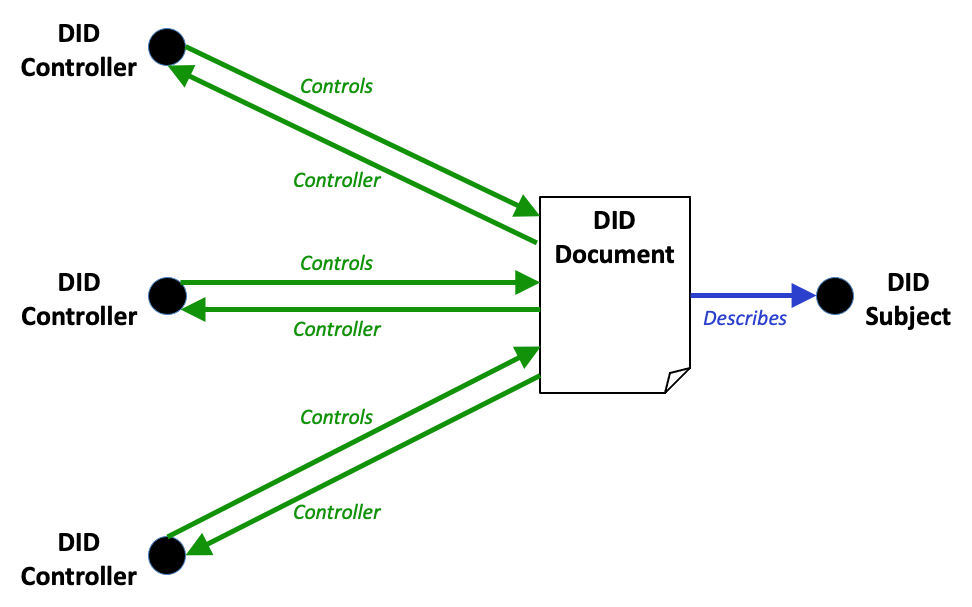

Decentralized identifiers (DIDs) are a new type of identifier that
enables verifiable, decentralized digital identity. A DID identifies any
subject (e.g., a person, organization, thing, data model, abstract entity, etc.)
that the controller of the DID decides that it identifies. In contrast to
typical, federated identifiers, DIDs have been designed so that they may be
decoupled from centralized registries, identity providers, and certificate
authorities. Specifically, while other parties might be used to help enable the
discovery of information related to a DID, the design enables the
controller of a DID to prove control over it without requiring permission
from any other party. DIDs are URIs that associate a DID subject
with a DID document allowing trustable interactions associated with that
subject.
This document specifies a common data model, a URL format, and a set of
operations for DIDs, DID documents, and DID methods.
This specification is under active development and implementers are advised
against implementing the specification unless they are directly involved with
the W3C DID Working Group. There are use cases [[?DID-USE-CASES]] in active
development that establish requirements for this document.
At present, there exist
80
experimental implementations and a preliminary
test suite
that will eventually determine whether or not implementations are conformant.
Readers are advised that Appendix contains a
list of concerns and proposed changes that will most likely result in
alterations to this specification.
Portions of the work on this specification have been funded by the United States
Department of Homeland Security's (US DHS) Science and Technology Directorate
under contracts HSHQDC-16-R00012-H-SB2016-1-002, and HSHQDC-17-C-00019, as well
as the US DHS Silicon Valley Innovation Program under contracts
70RSAT20T00000010, 70RSAT20T00000029, 70RSAT20T00000030. The content of this specification does not
necessarily reflect the position or the policy of the U.S. Government and no
official endorsement should be inferred.
Portions of the work on this specification have also been funded by the European
Union's StandICT.eu program under sub-grantee contract number CALL05/19.
Work on this specification has also been supported by the Rebooting the Web of
Trust community facilitated by Christopher Allen, Shannon Appelcline, Kiara
Robles, Brian Weller, Betty Dhamers, Kaliya Young, Kim Hamilton Duffy, Manu
Sporny, Drummond Reed, Joe Andrieu, and Heather Vescent.
Introduction
As individuals and organizations, many of us use globally unique identifiers in
a wide variety of contexts. They serve as communications addresses (telephone
numbers, email addresses, usernames on social media), ID numbers (for passports,
drivers licenses, tax IDs, health insurance), and product identifiers (serial
numbers, barcodes, RFIDs). Resources on the Internet are identified by globally
unique identifiers in the form of MAC
addresses; URIs (Uniform Resource Identifiers) are used for resources on the Web
and each web page you view in a browser has a globally unique URL (Uniform
Resource Locator).
The vast majority of these globally unique identifiers are not under our
control. They are issued by external authorities that decide who or what they
identify and when they can be revoked. They are useful only in certain contexts
and recognized only by certain bodies (not of our choosing). They may disappear
or cease to be valid with the failure of an organization. They may unnecessarily
reveal personal information. And in many cases they can be fraudulently
replicated and asserted by a malicious third-party ("identity theft").
The Decentralized Identifiers (DIDs) defined in this specification are a new
type of globally unique identifier designed to enable individuals and
organizations to generate our own identifiers using systems we trust, and to
prove control of those identifiers (authenticate) using cryptographic proofs
(for example, digital signatures).
Because we control the generation and assertion of these identifiers, each of us
can have as many DIDs as we need to respect our desired separation of
identities, personas, and contexts (in the everyday sense of these words). We
can scope the use of these identifiers to the most appropriate contexts. We can
interact with other people, institutions or systems that require us to identify
ourselves (or things we control) while maintaining control over how much
personal or private data should be revealed, and without depending on a central
authority to guarantee the continued existence of the identifier.
This specification does not presuppose any particular technology or
cryptography to underpin the generation, persistence, resolution or
interpretation of DIDs. Rather, it defines: a) the generic syntax for all
DIDs, and b) the generic requirements for performing the four basic CRUD
operations (create, read, update, deactivate) on the information associated
with a DID (called the DID document).
This enables implementers to design specific types of DIDs to work with the
computing infrastructure they trust (e.g., distributed ledger, decentralized
file system, distributed database, peer-to-peer network). The specification
for a specific type of DID is called a DID method. Implementers of
applications or systems using DIDs can choose to support the DID methods most
appropriate for their particular use cases.
This specification is for:
Developers who want to enable users of their system to generate and assert their
own identifiers (producers of DIDs);
Developers who want to enable their systems to accept user-controlled
identifiers (consumers of DIDs);
Developers who wish to enable the use of DIDs with particular computing
infrastructure (DID method developers).
DID methods can also be developed for identifiers registered in federated or
centralized identity management systems. Indeed, almost all types of identifier
systems can add support for DIDs. This creates an interoperability bridge
between the worlds of centralized, federated, and decentralized identifiers.
A Simple Example
A DID is a simple text string consisting of three parts, the:
{
"@context": "https://www.w3.org/ns/did/v1",
"id": "did:example:123456789abcdefghi",
"authentication": [{
// used to authenticate as did:...fghi
"id": "did:example:123456789abcdefghi#keys-1",
"type": "Ed25519VerificationKey2018", // external (property value)
"controller": "did:example:123456789abcdefghi",
"publicKeyBase58": "H3C2AVvLMv6gmMNam3uVAjZpfkcJCwDwnZn6z3wXmqPV"
}],
"service": [{
// used to retrieve Verifiable Credentials associated with the DID
"id":"did:example:123456789abcdefghi#vcs",
"type": "VerifiableCredentialService", // external (property value)
"serviceEndpoint": "https://example.com/vc/"
}]
}
Design Goals
Decentralized Identifiers are a component of larger systems, such as
the Verifiable Credentials ecosystem [[VC-DATA-MODEL]], which drove the design
goals for this specification. These design goals are summarized here.
Goal
Description
Decentralization
Eliminate the requirement for centralized authorities or single point
failure in identifier management, including the registration of globally unique
identifiers, public verification keys, services, and other
information.
Control
Give entities, both human and non-human, the power to directly control their
digital identifiers without the need to rely on external authorities.
Privacy
Enable entities to control the privacy of their information, including minimal,
selective, and progressive disclosure of attributes or other data.
Security
Enable sufficient security for requesting parties to depend on
DID documents for their required level of assurance.
Proof-based
Enable DID controllers to provide cryptographic proof when interacting
with other entities.
Discoverability
Make it possible for entities to discover DIDs for other entities, to
learn more about or interact with those entities.
Interoperability
Use interoperable standards so DID infrastructure can make use of
existing tools and software libraries designed for interoperability.
Portability
Be system- and network-independent and enable entities to use their digital
identifiers with any system that supports DIDs and DID methods.
Simplicity
Favor a reduced set of simple features to make the technology easier to
understand, implement, and deploy.
Extensibility
Where possible, enable extensibility provided it does not greatly hinder
interoperability, portability, or simplicity.
Architecture Overview
This section provides a basic understanding of the major elements of DID
architecture. Formal definitions of terms are provided in
.
The basic components of DID architecture.
DIDs and DID URLs
A DID, or Decentralized Identifier, is a URI composed of three parts: the
scheme "did:", a method identifier, and a unique, method-specific identifier
generated by the DID method. DIDs are resolvable to DID documents.
A DID URL extends the syntax of a basic DID to incorporate other standard
URI components (path, query, fragment) in order to locate a particular
resource—for example, a public key inside a DID document, or a
resource available external to the DID document.
DID Subjects
The subject of a DID is, by definition, the entity identified by the
DID. The DID subject may also be the DID controller.
Anything can be the subject of a DID: person, group, organization, physical
thing, logical thing, etc.
DID Controllers
The controller of a DID is the entity (person, organization, or
autonomous software) that has the capability—as defined by a DID
method—to make changes to a DID document. This capability is
typically asserted by the control of a set of cryptographic keys used by
software acting on behalf of the controller, though it may also be asserted via
other mechanisms. Note that a DID may have more than one controller, and the
DID subject can be the DID controller, or one of them.
Verifiable Data Registries
In order to be resolvable to DID documents, DIDs are typically
recorded on an underlying system or network of some kind. Regardless of the
specific technology used, any such system that supports recording DIDs and
returning data necessary to produce DID documents is called a
verifiable data registry. Examples include distributed ledgers,
decentralized file systems, databases of any kind, peer-to-peer networks, and
other forms of trusted data storage.
DID documents
DID documents contain information associated with a DID. They
typically express verification methods (such as public keys) and services
relevant to interactions with the DID subject. A DID document can be serialized
according to a particular syntax (see Section ). The
generic properties supported in a DID document are specified in . The DID itself is the value of the `id`
property. The properties present in a DID document may be updated according to
the applicable operations outlined in .
DID Methods
DID methods are the mechanism by which a particular type of DID
and its associated DID document are created, resolved, updated, and
deactivated using a particular verifiable data registry. DID
methods are defined using separate DID method specifications (see
).
Conceptually, the relationship between this specification and a DID
method specification is similar to the relationship between the IETF generic
URI specification ([[RFC3986]]) and a specific URI scheme
([[IANA-URI-SCHEMES]] (such as the http: and https: schemes specified in
[[RFC7230]]). It is also similar to the relationship between the IETF generic
URN specification ([[RFC8141]]) and a specific URN namespace definition (such
as the UUID URN namespace defined in [[RFC4122]]). The difference is that
a DID method specification, as well as defining a specific DID scheme, also
specifies the methods creating, resolving, updating, and deactivating
DIDs and DID documents using a specific type of verifiable data
registry.
DID resolvers and DID resolution
A DID resolver is a software and/or hardware component that takes a
DID (and associated input metadata) as input and produces a conforming
DID document (and associated metadata) as output. This process is called
DID resolution. The inputs and outputs of the DID resolution process are
defined in . The specific steps for resolving a
specific type of DID are defined by the relevant DID method
specification. Additional considerations for implementing a DID resolver are
discussed in [[DID-RESOLUTION]].
DID URL dereferencers and DID URL dereferencing
A DID URL dereferencer is a software and/or hardware component that takes
a DID URL (and associated input metadata) as input and produces a resource (and
associated metadata) as output. This process is called DID URL dereferencing.
The inputs and outputs of the DID URL dereferencing process are defined in . Additional considerations for implementing a
DID URL dereferencer are discussed in [[DID-RESOLUTION]].
This document contains examples that contain JSON, CBOR, and JSON-LD content.
Some of these examples contain characters that are invalid, such as inline
comments (//) and the use of ellipsis (...) to denote
information that adds little value to the example. Implementers are cautioned to
remove this content if they desire to use the information as valid JSON, CBOR,
or JSON-LD.
Some examples contain terms (both property names and values) that are not
defined in this specification, for illustrative purposes. These are indicated
with a comment (// external (property name|value)). Such terms,
when used in a DID document, are expected to be registered in the DID
Specification Registries [[?DID-SPEC-REGISTRIES]] with links to both a formal
definition and JSON-LD context.
Interoperability of implementations for DIDs and DID documents will be tested by
evaluating an implementation's ability to create and parse DIDs and
DID documents that conform to the specification. Interoperability for
producers and consumers of DIDs and DID documents is provided by
ensuring the DIDs and DID documents conform. Interoperability for
DID method specifications is provided by the details in each DID method
specification. It is understood that, in the same way that a web browser is not
required to implement all known URI schemes, conformant software that works with
DIDs is not required to implement all known DID methods (however, all
implementations of a given DID method must be interoperable for that method).
A conforming DID is any concrete expression of the rules specified
in Section which complies with relevant normative
statements in that section.
A conforming DID document is any concrete expression of the data
model described in this specification which complies with the relevant
normative statements in Sections and . A serialization format for the conforming
document is deterministic, bi-directional, and lossless as described in
Section .
A conforming DID method is any specification that complies with the
relevant normative statements in Section .
A conforming producer is any algorithm realized as software and/or
hardware and conforms to this specification if it generates conforming
DIDs or conforming DID Documents. A conforming producer MUST
NOT produce non-conforming DIDs or DID documents.
A conforming consumer is any algorithm realized as software and/or
hardware and conforms to this specification if it consumes conforming
DIDs or conforming DID documents. A conforming consumer MUST
produce errors when consuming non-conforming DIDs or DID documents.
Terminology
In addition to the terminology above, this specification also uses terminology
from the [[INFRA]] specification to formally define the data model. When [[INFRA]] terminology is used, such as
string, ordered set, and map, it is linked directly to that specification.
Identifier
This section describes the formal syntax for DIDs and DID URLs. The term
"generic" is used to differentiate the syntax defined here from syntax defined
by specificDID methods in their respective specifications.
DID Syntax
The generic DID scheme is a URI scheme conformant with [[!RFC3986]].
The following is the ABNF definition using the syntax in [[!RFC5234]], which
defines ALPHA and DIGIT. All other rule names not
defined in this ABNF are defined in [[RFC3986]].
This ABNF does not currently permit an empty method-specific-id
string. Some DID methods have expressed an interest in providing
resolution of an DID with an empty method-specific-id string,
for example to enable discovery of a DID document describing a
verifiable data registry by resolving the DID method name alone.
The Working Group is requesting feedback during the Candidate Recommendation
stage on whether or not an empty method-specific-id string is
of interest to implementers. This feature may change as a result of that feedback.
For requirements on DID methods relating to the DID syntax, see
Section .
DID URL Syntax
A DID URL always identifies a resource to be located. It can be
used, for example, to identify a specific part of a DID document.
This following is the ABNF definition using the syntax in [[!RFC5234]]. It
builds on the did scheme defined in . The
path-abempty,
query, and
fragment
components are identical to the ABNF rules defined in [[!RFC3986]].
did-url = did path-abempty [ "?" query ] [ "#" fragment ]
This specification reserves the semicolon (;) character for
possible future use as a sub-delimiter for parameters as described in
[[?MATRIX-URIS]].
DID Parameters
The DID URL syntax supports a simple format for parameters
based on the query component (See ). Adding
a DID parameter to a DID URL means that the parameter becomes part of
the identifier for a resource.
Some DID parameters are completely independent of of any specific DID
method, and function the same way for all DIDs. Other DID
parameters are not necessarily supported by all DID methods. Where
optional parameters are supported, they are expected to operate uniformly
across the DID methods that do support them. Requirements which enable
this are detailed in the following table.
Identifies a specific version of a DID document to be resolved (the
version ID could be sequential, or a UUID, or method-specific). Support
for this parameter is OPTIONAL. If present, the associated value MUST be an ASCII string.
versionTime
Identifies a certain version timestamp of a DID document to be resolved.
That is, the DID document that was valid for a DID at a certain
time. Support for this parameter is OPTIONAL. If present, the associated value
MUST be an ASCII string which is a valid XML
datetime value, as defined in section 3.3.7 of W3C XML Schema Definition Language
(XSD) 1.1 Part 2: Datatypes [[XMLSCHEMA11-2]]. This datetime value MUST be
normalized to UTC 00:00, as indicated by the trailing "Z".
hl
A resource hash of the DID document to add integrity protection, as
specified in [[?HASHLINK]]. This parameter is non-normative. Support for this
parameter is OPTIONAL. If present, the associated value MUST be an
ASCII string.
Implementers as well as DID method specification authors might use
additional DID parameters that are not listed here. For maximum
interoperability, it is RECOMMENDED that DID parameters use the official W3C
DID Specification Registries mechanism [[?DID-SPEC-REGISTRIES]], to avoid
collision with other uses of the same DID parameter with different semantics.
DID parameters might be used if there is a clear use case where the parameter
needs to be part of a URI that can be used as a link, or as a resource
in RDF / JSON-LD documents.
It is expected that DID parameters will not be used if the same
functionality can be expressed by passing input metadata to a DID resolver.
Additional considerations for processing these parameters are discussed in
[[?DID-RESOLUTION]].
Some example DID URLs using DID parameters are shown below.
The DID resolution and the DID URL dereferencing functions can
be influenced by passing input metadata to a DID resolver that are
not part of the DID URL. (See ). This is comparable to
HTTP, where certain parameters could either be included in an HTTP URL, or
alternatively passed as HTTP headers during the dereferencing process. The
important distinction is that DID parameters that are part of the DID
URL should be used to specify what resource is being
identified, whereas input metadata that is not part of the DID URL
should be use to control how that resource is resolved or
dereferenced.
Path
A DID path is identical to a generic URI path and MUST conform to the
path-abempty ABNF rule in
[[!RFC3986]].
A DID method specification MAY specify ABNF rules for DID paths
that are more restrictive than the generic rules in this section.
did:example:123456/path
Query
A DID query is derived from a generic URI query and MUST conform to the
did-query ABNF rule in Section . If a DID query is present, it MUST be used
as described in Section .
A DID method specification MAY specify ABNF rules for DID queries
that are more restrictive than the generic rules in this section.
For information about how to dereference a DID fragment, see
.
A DID method specification MAY specify ABNF rules for DID
fragments that are more restrictive than the generic rules in this section.
In order to maximize interoperability, implementers are urged to ensure that
DID fragments are interpreted in the same way across representations (as
described in Section ). For example, while
JSON Pointer [[?RFC6901]] can be used in a DID fragment, it will not
be interpreted in the same way across representations.
Additional semantics for fragment identifiers, which are compatible with and
layered upon the semantics in this section, are described for JSON-LD
representations in Section .
Relative DID URLs
A relative DID URL is any URL value in a DID document that does not start
with did:<method-name>:<method-specific-id>. More
specifically, it is any URL value that does not start with the ABNF defined in
Section . The contents of the URL typically
refers to a resource in the same DID document. Relative DID URLs
MAY contain relative path components, query parameters, and fragment
identifiers.
When resolving a relative DID URL reference, the algorithm specified in RFC3986 Section 5: Reference Resolution MUST
be used. The base URI value is the DID that is
associated with the DID subject, see Section .
The scheme is did. The authority
is a combination of <method-name>:<method-specific-id>, and
the path, query, and fragment
values are those defined in Section , Section , and Section , respectively.
{
"@context": "https://www.w3.org/ns/did/v1",
"id": "did:example:123456789abcdefghi",
"verificationMethod": [{
"id": "did:example:123456789abcdefghi#key-1",
"type": "Ed25519VerificationKey2018", // external (property value)
"controller": "did:example:123456789abcdefghi",
"publicKeyBase58": "H3C2AVvLMv6gmMNam3uVAjZpfkcJCwDwnZn6z3wXmqPV"
}, ...],
"authentication": [
// a relative DID URL used to reference a verification method above
"#key-1"
]
}
In the example above, the relative DID URL value will be transformed to an
absolute DID URL value of did:example:123456789abcdefghi#key-1.
Data Model
This specification defines a data model for DID documents that
is capable of being serialized into multiple concrete representations. This
section provides a high-level description of the data model, how different types
of properties are expressed in the data model, and instructions for extending
the data model.
A DID document consists of a map of entries, where each entry consists of
an entry key/entry value pair. The data model contains at least two
different classes of entries. The first class of entries are called
properties, and are specified in section .
The second class are representation-specific entries, and
are specified in section .
All entry keys in the data model are strings. All entry values are expressed
using one of the abstract data types in the table below while each
representation specifies the concrete serialization format of each data type.
A sequence of code units often used to represent human readable language
as specified in [[INFRA]].
integer
A real number without a fractional component as specified in
[XMLSCHEMA11-2]. To maximize
interoperability, implementers are urged to heed the advice regarding
integers in RFC7159, Section 6: Numbers.
double
A value that is often used to approximate arbitrary real numbers as specified
in [XMLSCHEMA11-2]. To maximize
interoperability, implementers are urged to heed the advice regarding
doubles in RFC7159, Section 6: Numbers.
A value that is used to indicate the lack of a value as defined in [[INFRA]].
Extensibility
The data model supports two types of extensibility.
For maximum interoperability, it is RECOMMENDED that extensions use the official
W3C DID Specification Registries mechanism [[?DID-SPEC-REGISTRIES]]. The use of
this mechanism for new properties or other extensions is the only specified
method that ensures that two different representations will be able to work
together.
Representations MAY define other extensibility mechanisms, including ones that
do not require the use of the DID Specification Registries. Such extension
mechanisms SHOULD support lossless conversion into any other conformant
representation. Extension mechanisms for a representation SHOULD define a
mapping of all properties and representation syntax into the data model and its type system.
It is always possible for two specific implementations to agree out-of-band to
use a mutually understood extension or representation that is not recorded in
the DID Specification Registries [[?DID-SPEC-REGISTRIES]]; interoperability between such
implementations and the larger ecosystem will be less reliable.
Core Properties
A DID points to a DID document. DID documents are the
serialization of the data model.
The following sections define the properties in a DID document,
including whether these properties are required or optional. These properties
describe relationships between the DID subject and the value of the
property.
This specification defines three classes of core properties:
properties defined for a Service, a concept
represented by a map in the
data model, and specified in Section
.
The core properties are summarized informatively in Section
, and described in detail and specified
normatively in subsequent sections.
As a result of the data model being defined using
terminology from [[INFRA]], property values which can contain more than one
item, such as maps and
sets, are explicitly ordered. For the
purposes of this specification, unless otherwise stated, ordering is not
important and implementations are not expected to produce or consume
deterministically ordered values.
Summary
This section contains an informative reference for the core properties defined
by this specification, with expected values and whether or not they are
required. The property names in the tables are linked to the normative
definitions and more detailed descriptions of each property.
The property names id, type, and
controller can be present in different classes with possible
differences in constraints.
A string that conforms to the rules of
[[RFC3986]] for URIs, a map, or an
ordered set composed of a one or more
strings that conform to the rules of
[[RFC3986]] for URIs and/or maps.
DID method specifications can create intermediate representations of a
DID document that do not contain the id property,
such as when a DID resolver is performing DID resolution.
However, the fully resolved DID document always contains a valid
id property. The value of id in the
resolved DID document MUST match the DID that was
resolved.
Also Known As
This property is at risk of being removed from DID Core in favour of putting
it in the DID Specification Registries [[?DID-SPEC-REGISTRIES]] pending
feedback from implementers and reviewers.
A DID subject can have multiple identifiers for different purposes, or
at different times. The assertion that two or more DIDs (or other types
of URI) identify the same DID subject can be made using the
alsoKnownAs property.
alsoKnownAs
The alsoKnownAs property is OPTIONAL. If present, the value MUST
be an ordered set where each item in the
set is a URI conforming to [[RFC3986]].
This relationship is a statement that the subject of this identifier is
also identified by one or more other identifiers.
Applications might choose to consider two identifiers related by
alsoKnownAs to be equivalent if the
alsoKnownAs relationship is reciprocated in the reverse
direction. It is best practice not to consider them equivalent in the
absence of this inverse relationship. In other words, the presence of an
alsoKnownAs assertion does not prove that this assertion
is true. Therefore it is strongly advised that a requesting party obtain
independent verification of an alsoKnownAs assertion.
Given that the DID subject might use different identifiers for different
purposes, an expectation of strong equivalence between the two identifiers, or
merging the graphs of the two corresponding DID documents, is not
necessarily appropriate, even with a reciprocal relationship.
{
"@context": "https://www.w3.org/ns/did/v1",
"id": "did:example:123456789abcdefghi",
"controller": "did:example:bcehfew7h32f32h7af3",
"service": [{
// used to retrieve Verifiable Credentials associated with the DID
"type": "VerifiableCredentialService",// external (property value)
"serviceEndpoint": "https://example.com/vc/"
}]
}
Note that authorization provided by the value of controller is
separate from authentication (see Section ).
This is particularly important for key recovery in the case of cryptographic
key loss, when the subject no longer has access to their keys, or key
compromise, where the DID controller's trusted third parties need to
override malicious activity by an attacker. See Section
.
Verification Methods
A DID document can express verification methods, such as
cryptographic keys, which can be used to authenticate1 or authorize interactions
with the DID subject or associated parties. The information expressed
often includes globally unambiguous identifiers and public key material, which
can be used to verify digital signatures. For example, a public key can be
used as a verification method with respect to a digital signature; in such
usage, it verifies that the signer possessed the associated private key.
Verification methods might take many parameters. An example of this is a set
of five cryptographic keys from which any three are required to contribute to
a threshold signature. Methods need not be cryptographic.
In order to maximize interoperability, support for public keys as
verification methods is restricted: see
. For other types of verification
method, the verification method SHOULD be registered in the DID
Specification Registries [[?DID-SPEC-REGISTRIES]].
verificationMethod
The verificationMethod property is OPTIONAL. If present, the
value MUST be an ordered
set of verification methods, where each verification method is described by
a map. The verification methodmap MUST include the id,
type, controller, and specific verification method
properties as determined by the value of type, and MAY include
additional properties.
In the case where a verification method is a public key, the value of the
id property might be structured as a
compound key. This is
especially useful for integrating with existing key management systems and key
formats such as JWK [[RFC7517]]. It is RECOMMENDED that JWK kid
values are set to the public key fingerprint [[RFC7638]]. It is RECOMMENDED
that verification methods that use JWKs to represent their public keys utilize
the value of kid as their fragment identifier. See the first key
in
for an example of a public key with a compound key identifier.
The value of the type property MUST be exactly one verification
method type. In order to maximize global interoperability, the
verification method type SHOULD be registered in the DID Specification
Registries [[?DID-SPEC-REGISTRIES]].
The value of the controller property MUST be a string that conforms to the rules in Section .
The value of the type property MUST be exactly one verification
method type expressed as a string. In order to
maximize interoperability, the verification method type SHOULD be
registered in the DID Specification Registries [[?DID-SPEC-REGISTRIES]].
A verification method MUST contain a property to express verification
material. The property used is determined by the value of the
type property. Examples of such properties are
publicKeyJwk or publicKeyBase58;
others can be found in the DID Specification Registries
[[?DID-SPEC-REGISTRIES]].
A verification method MUST NOT contain multiple verification material
properties for the same material. For example, expressing key material in a
verification method using both publicKeyJwk and
publicKeyBase58 at the same time is prohibited.
publicKeyJwk
The publicKeyJwk property is OPTIONAL. If present, the value MUST
be a map representing a JSON Web Key that
conforms to [[RFC7517]]. The map MUST NOT
contain "d", or any other members of the private information class as
described in Registration
Template.
publicKeyBase58
The publicKeyBase58 property is OPTIONAL. If present, the value
MUST be a string representation of a base58btc
encoded public key.
In the case where a verification method is a public key, the value of the
id property might contain a
fragment. This is
especially useful for integrating with existing key management systems and key
formats such as JWK [[RFC7517]]. It is RECOMMENDED that verification methods
that use JWKs to represent their public keys use the value of kid
as their fragment identifier. It is RECOMMENDED that JWK kid
values are set to the public key fingerprint [[RFC7638]]. See the first key
in
for an example of a public key with a compound key identifier.
The semantics of the controller property are the same when the
subject of the relationship is the DID document as when the subject
of the relationship is a verification method, such as a public key. Since a
key (for example) can't control itself, and the key controller cannot be
inferred from the DID document, it is necessary to explicitly express
the identity of the controller of the key. The difference is that the value of
controller for a verification method is not necessarily
a DID controller. DID controller(s) are expressed using the
controller property at the highest level of the
DID document (the topmost map in
the data model); see
.
If the value of a verification method property is a
map, the verification method has
been embedded and its properties can be accessed directly. However, if the
value is a URL string, the verification
method has been included by reference and its properties will need to be
retrieved from elsewhere in the DID document or from another DID
document. This is done by dereferencing the URL and searching the
resulting resource for a verification methodmap with an id property
whose value matches the URL.
{
...
"authentication": [
// this key is referenced, it may be used with more than one verification relationship
"did:example:123456789abcdefghi#keys-1",
// this key is embedded and may *only* be used for authentication
{
"id": "did:example:123456789abcdefghi#keys-2",
"type": "Ed25519VerificationKey2018", // external (property value)
"controller": "did:example:123456789abcdefghi",
"publicKeyBase58": "H3C2AVvLMv6gmMNam3uVAjZpfkcJCwDwnZn6z3wXmqPV"
}
],
...
}
This specification strives to limit the number of formats for expressing public
key material in a DID document to the fewest possible, to increase the
likelihood of interoperability. The fewer formats that implementers have to
implement, the more likely it will be that they will support all of them. This
approach attempts to strike a delicate balance between ease of implementation
and supporting formats that have historically had broad deployment.
This specification defines several verification relationships below. A
DID document MAY include any of these, or other properties, to express
a specific verification relationship. In order to maximize global
interoperability, any such properties used SHOULD be registered in the DID
Specification Registries [[?DID-SPEC-REGISTRIES]].
{
"@context": "https://www.w3.org/ns/did/v1",
"id": "did:example:123456789abcdefghi",
...
"authentication": [
// this method can be used to authenticate as did:...fghi
"did:example:123456789abcdefghi#keys-1",
// this method is *only* approved for authentication, it may not// be used for any other proof purpose, so its full description is// embedded here rather than using only a reference
{
"id": "did:example:123456789abcdefghi#keys-2",
"type": "Ed25519VerificationKey2018",
"controller": "did:example:123456789abcdefghi",
"publicKeyBase58": "H3C2AVvLMv6gmMNam3uVAjZpfkcJCwDwnZn6z3wXmqPV"
}
],
...
}
If authentication is established, it is up to the DID method or other
application to decide what to do with that information. A particular DID
method could decide that authenticating as a DID controller is
sufficient to, for example, update or delete the DID document. Another
DID method could require different keys, or a different verification
method entirely, to be presented in order to update or delete the DID
document than that used to authenticate. In other words, what is done
after the authentication check is out of scope for the
data model, but DID methods and applications
are expected to define this themselves.
This is useful to any authentication verifier that needs
to check to see if an entity that is attempting to authenticate is, in
fact, presenting a valid proof of authentication. When a verifier
receives some data (in some protocol-specific format) that contains a proof
that was made for the purpose of "authentication", and that says that an
entity is identified by the DID, then that verifier checks to
ensure that the proof can be verified using a verification method (e.g.,
public key) listed under authentication in the
DID Document.
The `assertionMethod` verification relationship is used to specify how
the DID subject is expected to express claims, such as for the purposes
of issuing a Verifiable Credential [[?VC-DATA-MODEL]].
{
"@context": "https://www.w3.org/ns/did/v1",
"id": "did:example:123456789abcdefghi",
...
"assertionMethod": [
// this method can be used to assert statements as did:...fghi
"did:example:123456789abcdefghi#keys-1",
// this method is *only* approved for assertion of statements, it may not// be used for any other verification relationship, so its full description is// embedded here rather than using only a reference
{
"id": "did:example:123456789abcdefghi#keys-2",
"type": "Ed25519VerificationKey2018", // external (property value)
"controller": "did:example:123456789abcdefghi",
"publicKeyBase58": "H3C2AVvLMv6gmMNam3uVAjZpfkcJCwDwnZn6z3wXmqPV"
}
],
...
}
Key Agreement
The `keyAgreement` verification relationship is used to specify how
to encrypt information to the DID subject, such as for the purposes
of establishing a secure communication channel with the recipient.
An example of when this property is useful is when encrypting a message
intended for the DID Subject. In this case, the counterparty uses the
public cryptographic key information in the verification method
to wrap a decryption key for the recipient.
{
"@context": "https://www.w3.org/ns/did/v1",
"id": "did:example:123456789abcdefghi",
...
"keyAgreement": [
// this method can be used to perform key agreement as did:...fghi
"did:example:123456789abcdefghi#keys-1",
// this method is *only* approved for key agreement usage, it may not// be used for any other verification relationship, so its full description is// embedded here rather than using only a reference
{
"id": "did:example:123#zC9ByQ8aJs8vrNXyDhPHHNNMSHPcaSgNpjjsBYpMMjsTdS",
"type": "X25519KeyAgreementKey2019", // external (property value)
"controller": "did:example:123",
"publicKeyBase58": "9hFgmPVfmBZwRvFEyniQDBkz9LmV7gDEqytWyGZLmDXE"
}
],
...
}
An example of when this property is useful is when a DID subject
chooses to invoke their capability to start a vehicle through the combined
usage of a verification method and the StartCar
capability. In this example, the vehicle would be the verifier and
would need to verify that the verification method exists in the
capabilityInvocation property.
{
"@context": "https://www.w3.org/ns/did/v1", "id":
"did:example:123456789abcdefghi",
...
"capabilityInvocation": [
// this method can be used to invoke capabilities as did:...fghi
"did:example:123456789abcdefghi#keys-1",
// this method is *only* approved for capability invocation usage, it may not// be used for any other verification relationship, so its full description is// embedded here rather than using only a reference
{
"id": "did:example:123456789abcdefghi#keys-2",
"type": "Ed25519VerificationKey2018", // external (property value)
"controller": "did:example:123456789abcdefghi",
"publicKeyBase58": "H3C2AVvLMv6gmMNam3uVAjZpfkcJCwDwnZn6z3wXmqPV"
}
],
...
}
Capability Delegation
The `capabilityDelegation` verification relationship is used to specify
a mechanism that might be used by the DID subject to delegate
a cryptographic capability to another party, such as delegating the
authority to access a specific HTTP API to a subordinate.
An example of when this property is useful is when a DID Subject
chooses to grant their capability to start a vehicle through the combined
usage of a verification method and the StartCar capability
to a party other than themselves.
{
"@context": "https://www.w3.org/ns/did/v1", "id":
"did:example:123456789abcdefghi",
...
"capabilityDelegation": [
// this method can be used to perform capability delegation as did:...fghi
"did:example:123456789abcdefghi#keys-1",
// this method is *only* approved for granting capabilities it may not// be used for any other verification relationship, so its full description is// embedded here rather than using only a reference
{
"id": "did:example:123456789abcdefghi#keys-2",
"type": "Ed25519VerificationKey2018", // external (property value)
"controller": "did:example:123456789abcdefghi",
"publicKeyBase58": "H3C2AVvLMv6gmMNam3uVAjZpfkcJCwDwnZn6z3wXmqPV"
}
],
...
}
Revealing public information through services (such as social media
accounts, personal websites, and email addresses) is discouraged. See Section
and
for additional details.
The information associated with services are often
service-specific. For example, the information associated with an encrypted
messaging service can express how to initiate the encrypted link before
messaging begins.
Pointers to services are expressed using the service
property. Each service has its own id and type
properties, as well as a serviceEndpoint property with a
URI or a set of other properties describing the service.
service
The service property is OPTIONAL. If present, the associated
value MUST be an ordered set
of services, where each service is described by a
map. Each servicemap MUST have id,
type, and serviceEndpoint properties, and MAY
include additional properties.
The value of the id property MUST be a URI
conforming to [[RFC3986]]. The value of service MUST NOT contain
multiple entries with the same id. In this case, a
DID document processor MUST produce an error.
The value of the serviceEndpoint property MUST be a
string, a map,
or an ordered set composed of a one or more
strings and/or
maps. All string
values MUST be valid URIs conforming to [[RFC3986]] and normalized
according to the rules in section 6 of [[RFC3986]] and to any normalization
rules in its applicable URI scheme specification. Extension
specifications for services MAY further restrict the properties associated
with the extension.
It is expected that the service protocol is published in an open
standard specification.
For more information about security considerations regarding authentication
services see Sections
and .
All concrete representations of a DID document are serialized using a
deterministic mapping that is able to be unambiguously parsed into the data model defined in this specification. All
serialization methods MUST define rules for the bidirectional translation of a
DID document both into and out of the representation in question. An
implementation MUST NOT convert between representations without first parsing to
a data model (described in Sections and ); translation
between any two representations is done by parsing the source representation
into the data model and then serializing the data model into the target representation.
Although syntactic mappings are provided for JSON, JSON-LD, and CBOR here,
applications and services MAY use any other data representation syntax that is
capable of expressing the data model, such as XML or
YAML.
Producers MUST indicate which representation of a document has been used via a
media type in the document's metadata. Consumers MUST determine the
representation of a DID document via the contentTypeDID
resolver metadata field (see ), not
through the content of the DID document alone.
Unrecognized entries in the data model MUST be
preserved. An unrecognized entry is any entry that does not have explicit
processing rules known to the consumer or producer. Consumers MUST add all
entries that do not have explicit processing rules for the
representation being consumed to the data
model using only the representation's generic type processing rules.
Producers MUST serialize all entries in the data
model that do not have explicit processing rules for the
representation being produced using only the representation's
generic type processing rules.
Note that entries that contain representation-specific syntax will only have
special processing rules defined by a single representation. Consumers of a
different representation are required to include these entries in the data model using only their generic type processing rules
to enable lossless conversion of representations. Similarly, producers are
required to treat entries containing representation-specific syntax using
generic type processing rules when producing a representation for which
the entry is not defined. Representations are required to define
producer behavior for any such entries defined by the representation.
It is RECOMMENDED that representations use the lexical representation
of registered data types. For example, JSON and JSON-LD use the XML
Schema dateTime lexical representation to represent datetimes.
A representation MAY choose to represent the data types differently.
For example, some CBOR-based representations express datetime
values using integers to represent the number of seconds since the Unix epoch.
The production and consumption rules in this section apply to all
implementations seeking to be fully compatible with independent implementations
of the specification. Deployments of this specification MAY use a custom
agreed-upon representation, including rules agreed to by a pair of producers
and consumers for handling properties not listed in the registry. See Section
for more information.
Representation Requirements
The data model provided in this specification
supports being serialized into a variety of existing representations. Some
applications might require the creation of a new representation. All
representations require the following:
A representation MUST define an unambiguous encoding and decoding for all
property names and all data modeldata types as defined in this specification. This enables
anything that can be represented in the data model to
also be represented in a compliant representation.
The representation MUST be uniquely associated with an IANA-registered MIME
type.
The representation MUST define fragment processing rules for its MIME type that
are conformant with the fragment processing rules defined in section
of this specification.
The representation MAY define representation-specific syntax that can be stored
as entries in the data model. These entries are
included when consuming or producing to aid in ensuring lossless conversion.
In order to maximize interoperability, representation specification authors
SHOULD register their representation in the DID Specification
Registries [[?DID-SPEC-REGISTRIES]].
JSON
This section sets out the requirements for producing and consuming DID
documents that are in plain JSON (as indicated by a
contentType of application/did+json in the resolver
metadata).
Production
A DID document MUST be a single JSON
object conforming to [[!RFC8259]]. All entries of the DID
document data model described in
MUST be represented by using the entry key as the name of the
member of the JSON object. The values of entries,
including all extensions, are encoded in JSON [[RFC8259]] by mapping entry
values to JSON types as follows:
JSON Object, each entry is represented
as a member of the JSON Object with the entry key as the member name and the
entry value according to its type, as defined in this section
Implementers producing JSON are advised to ensure that their algorithms are
aligned with the JSON serialization rules in
the [[INFRA]] specification.
All entries of the DID document MUST be included in
the root object. Entries MAY define additional data sub structures subject
to the value representation rules in the list above.
Consumption
The topmost element MUST be a JSON object. Any other data type at the topmost
level is an error and MUST be rejected. The topmost JSON object represents the
DID document, and all members of this object are entries of the DID
document. The object member name is the entry key, and the member value
is interpreted as follows:
ordered map, each member of the JSON Object
is added as an entry to the ordered map with the entry key being the
member name and the value converted based on the JSON type and, if available,
entry definition, as defined here; as no order is specified by JSON Objects,
no insertion order is guaranteed
Implementers consuming JSON are advised to ensure that their algorithms are
aligned with the JSON
consumption rules in the [[INFRA]] specification.
Note that the @context object member, if present, will not have
additional processing applied to its value, which will be added verbatim to the
data model.
JSON-LD
JSON-LD is a JSON-based format used to serialize
Linked Data.
This section establishes the requirements for producing and consuming DID
documents that are expressed as JSON-LD. JSON-LD DID documents
are indicated by a contentType resolver metadata field that is
set to application/did+ld+json.
Use of the media type application/did+ld+json is pending
clarification over the registration of
media types with multiple suffixes. The alternative will be to use
application/ld+json with an expected profile parameter of
https://www.w3.org/ns/did/json-ld-profile if multiple suffixes
cannot be registered by the time the rest of DID Core is ready for W3C
Proposed Recommendation.
The following application-specific modifications are made by this specification
to the JSON-LD specification [[JSON-LD11]] to ease interoperability between
JSON and JSON-LD implementations:
The @id and @type keywords are aliased to
id and type respectively, enabling developers
to use this specification as idiomatic JSON.
Even though JSON-LD allows any IRI as node identifiers, DID documents
are explicitly restricted to only describe DIDs. This means that the value of
id that refers to the DID subject MUST be a valid
DID and not any other kind of IRI.
Data types, such as integers, dates, units of measure, and URLs, are
automatically typed to provide stronger type guarantees for use cases that
require them.
The JSON-LD
specification defines values that are valid for this entry. This entry
contains representation-specific syntax and therefore could be present in the data model to aid in lossless conversion. If the entry
is present in the data model, it MUST be used during
production unless either an alternative @context value is
explicitly provided to the producer or if the value from the data model is not
valid according to the consumption rules.
The value of @context MUST be exactly one of these values.
All members of the @context property SHOULD exist in the DID
Specification Registries [[?DID-SPEC-REGISTRIES]] in order to achieve
interoperability across different representations. If a member does not exist
in the DID Specification Registries, then the DID document might not be
interoperable across representations.
It is RECOMMENDED that dereferencing each URI value of the
@context entry results in a document containing
machine-readable information about the context. Note that further expectations
of additional JSON-LD contexts are described as part of the DID Specification
Registries registration process.
Producers SHOULD NOT produce DID documents that contain properties not
defined via the @context. Properties that are not defined via the
@context MAY be dropped by Consumers.
Consumption
The DID document MUST be deserialized as a JSON document according to
the consumption rules for JSON, with one additional
requirement: The DID document MUST include the @context
entry and be processed according to the rules below.
Consumers SHOULD drop all properties from a DID document that are not
defined via the @context.
CBOR
Like Javascript Object Notation (JSON) [[RFC8259]], Concise Binary Object
Representation (CBOR) [[RFC7049]] defines a set of formatting rules for the
portable representation of structured data. CBOR is a more concise,
machine-readable, language-independent data interchange format that is
self-describing and has built-in semantics for interoperability.
The following sections outline the rules for producing and consuming
DID documents that are expressed in CBOR as indicated by a
contentType of application/did+cbor in the resolver
metadata.
Production
A DID document MUST be a single CBOR
Map conforming to [[RFC7049]]. All topmost entries of the DID
document MUST be represented by using the entry key as the name of the
key of the CBOR Map. The values of entries of the data
model described in Section , including all
extensions, are encoded in CBOR [[RFC7049]] by mapping entry values to CBOR
types as follows:
CBOR map (major type 5), each entry
is represented as a member of the CBOR Map with the entry key as the key and
the entry value according to its type, as defined in this section
CBOR string (major type 5) formatted as
an XML Datetime normalized to
UTC 00:00 and without sub-second decimal precision. For example:
2020-12-20T19:17:47Z.
To produce a deterministic canonical CBOR representation of a DID document and
faciliate maximal lossless compatiblity with other core representations via the
Abstract Data Model the following constraints of a CBOR representation of a DID
Document model MUST be followed:
Entry keys MUST be represented as text string (major type 3) and contain only UTF-8 strings.
Undefined Values of Required Properties as defined in the Data Model that are absent from the CBOR representation SHOULD be labeled with Primitive type (major type 7) with value 23 (Undefined value).
Entry keys in each CBOR map MUST be unique.
Integer encoding MUST be as short as possible.
The expression of lengths in CBOR major types 2 through 5 MUST be as short as possible.
The keys in every map must be sorted lowest value to highest. Sorting is performed on the bytes of the representation of the keys. If two keys have different lengths, the shorter one sorts earlier. If two keys have the same length, the one with the lower value in (byte-wise) lexical order sorts earlier.
All entries of the DID document represented in CBOR MUST be included in
the root map (major type 5). Entries MAY define additional data sub structures
represented as nested CBOR maps (major type 5) and is subject to the value
representation rules in the lists above and conformance to section § 4.3 Extensibility.
The topmost element MUST be a CBOR map
(major type 5). Any other data type at the highest level of the
DID document (the topmost map in
the data model) is an error and MUST be
rejected. The topmost CBOR map
represents the DID document, and all data items of this map are
entries of the DID document. The data item key is the entry key,
and the data item value is interpreted as follows:
ordered map, each data item of the CBOR map
is added as an entry to the ordered map with the entry key being the data
item name and the value converted based on the CBOR type and, if available,
entry definition, as defined here; as no order can be enforced for general
CBOR maps, no insertion order is guaranteed.
ordered set, each value of the
CBOR array is added to the ordered set
in order, converted based on the CBOR type of the array value as defined
in this table
Duplicate key in the same CBOR map MUST throw an Error.
Unknown Additional
Properties and Values that are not defined in data
model, represented in the `@context`, or represented in the DID
Specification Registries [[?DID-SPEC-REGISTRIES]] or be explicitly documented
as an extension of the DID document conformant to
§ 4.3 Extensibility MUST be preserved by default
and represented as major type 3 (UTF-8 String)
CBOR Extensibility
In CBOR, one point of extensibility is with the use of CBOR tags. [[RFC7049]]
defines a basic set of data types, as well as a tagging mechanism that enables
extending the set of data types supported via the IANA CBOR Tag
Registry. This allows for tags to enhance the semantic description of the
data that follows. Extensibility with CBOR tags also facilitates lossless
conversion to other core representations. CBOR Tags number 21 to 23 indicate
that a following byte string might require a specific encoding when
interoperating with a text-based representation such as JSON. These tags are
useful when an encoder knows that the byte string data it is writing is likely
to be later converted to a particular text-based usage such as JSON. These
three tag numbers suggest conversions to three of the base data encodings
defined in [[RFC4648]]. Tag number 21 suggests conversion to base64url encoding
(Section 5 of [[RFC4648]]), where padding is not used (see Section 3.2 of
[[RFC4648]]); that is, all trailing equals signs ("=") are removed from the
encoded string. Tag number 22 suggests conversion to classical base64 encoding
(Section 4 of [[RFC4648]] ), with padding as defined in [[RFC4648]]. For both
base64url and base64, padding bits are set to zero (see Section 3.5 of
[[RFC4648]] ), and encoding is performed without the inclusion of any line
breaks, whitespace, or other additional characters. Tag number 23 suggests
conversion to base16 (hex) encoding, with uppercase alphabetics (see Section 8
of [[RFC4648]]). Note that, for all three tag numbers, the encoding of the
empty byte string is the empty text string of other representations.
DagCBOR
DagCBOR is a further restricted subset of CBOR for representing the DID Document
as a Directed Acyclic Graph model using canonical CBOR encoding
with additional constraints. DagCBOR requires that there exist a single way of
encoding any given object, and that encoded forms contain no superfluous data
that may be ignored or lost in a round-trip decode/encode.
When producing and consuming DID Documents representing in DagCBOR the following
rules are followed:
CBOR tags other than the CID tag (42) MUST NOT be used.
DID methods provide the means to implement this specification on
different verifiable data registries. New DID methods are
defined in their own specifications, so that interoperability between
different implementations of the same DID method is ensured. This
section specifies the requirements on any DID method, which are met by
the DID method's associated specification.
For adding properties to a DID document which are specific to a
particular DID method, see .
Method Schemes
A DID method specification MUST define exactly one method-specific
DID scheme, identified by exactly one method name (see the
method-name rule in Section ).
The authors of a new DID method specification are expected to use a
method name that is unique among all DID method names known to them at
the time of publication.
Because there is no central authority for allocating or approving DID
method names, there is no way to know for certain if a specific DID
method name is unique. To help with this challenge, a non-authoritative list
of known DID method names and their associated specifications is
maintained in the DID Methods Registry, which is part of the DID Specification
Registries [[?DID-SPEC-REGISTRIES]].
Authors of new DID method specifications are encouraged to add their
method names to the DID Methods Registry so that other implementors
and members of the community have a place to see an overview of existing
DID methods.
The DID method specification MUST specify how to generate the
method-specific-id component of a DID.
Case sensitivity and normalization of the value of the
method-specific-id rule MUST be defined by the DID method
specification.
The method-specific-id value MUST be able to be generated without
the use of a centralized registry service.
The method-specific-id value might be globally unique by itself.
The method-specific-id value MUST be unique within a method.
Any DID generated by the method MUST be globally unique.
If needed, a method-specific DID scheme MAY define multiple
method-specific-id formats.
The method-specific-id format MAY include colons. The use of
colons MUST comply syntactically with the method-specific-id ABNF
rule.
The meaning of colons in the method-specific-id is entirely
method-specific. Colons might be used by DID methods for establishing
hierarchically partitioned namespaces, for identifying specific instances or
parts of the verifiable data registry, or for other purposes.
Implementers are advised to avoid assuming any meanings or
behaviors associated with a colon that are generically applicable to all
DID methods.
Method Operations
This section sets out the requirements for DID method specifications
with regards to operations that can be performed on a DID document.
Determining the authority of a party to carry out the operations is
method-specific. For example, a DID method might:
The DID method specification MUST specify how a DID controller can
update a DID document on the verifiable data registry, including
all cryptographic operations necessary to establish proof of control,
or state that updates are not possible.
An update to a DID is any change, after creation, in the data used to
produce a DID document. DID Method implementers are responsible
for defining what constitutes an update, and what properties of the DID
document are supported by a given DID method. For example, an update
operation which replaces key material without changing it could be a valid
update that does not result in changes to the DID document.
Deactivate
The DID method specification MUST specify how a DID controller can
deactivate a DID on the verifiable data registry, including all
cryptographic operations necessary to establish proof of deactivation,
or state that deactivation is not possible.
Security Requirements
DID method specifications MUST include their own Security
Considerations sections. This section MUST consider all the requirements
mentioned in section 5 of [[RFC3552]] (page 27) for the DID operations
defined in the specification.
At least the following forms of attack MUST be considered: eavesdropping,
replay, message insertion, deletion, modification, and man-in-the-middle.
Potential denial of service attacks MUST be identified as well.
This section MUST discuss, per Section 5 of [[RFC3552]], residual risks (such
as the risks from compromise in a related protocol, incorrect implementation,
or cipher) after threat mitigation was deployed.
This section MUST provide integrity protection and update authentication for
all operations required by Section .
If the technology involves authentication, particularly user-host
authentication, the security of the authentication method MUST be clearly
specified.
DID methods MUST discuss the policy mechanism by which DIDs are proven to be uniquely assigned.
Method-specific endpoint authentication MUST be discussed. Where DID
methods make use of DLTs with varying network topology, sometimes
offered as light node or thin client
implementations to reduce required computing resources, the security assumptions
of the topology available to implementations of the DID method MUST be
discussed.
If the protocol incorporates cryptographic protection mechanisms, the
DID method specification MUST clearly indicate which portions of the
data are protected and what the protections are, and SHOULD give an indication
to what sorts of attacks the cryptographic protection is susceptible.
For example, integrity only, confidentiality, endpoint authentication, and so
on.
Data which is to be held secret (keying material, random seeds, and so on)
SHOULD be clearly labeled.
DID method specifications SHOULD explain and specify the implementation
of signatures on DID documents, if applicable.
Where DID methods make use of peer-to-peer computing resources, such as
with all known DLTs, the expected burdens of those resources SHOULD be
discussed in relation to denial of service.
DID methods that introduce new authentication service
types (see Section ) SHOULD consider the
security requirements of the supported authentication protocol.
Privacy Requirements
DID method specifications MUST include their own Privacy
Considerations sections, if only to point to
.
The DID method specification's Privacy Considerations section MUST
discuss any subsection of Section 5 of [[RFC6973]] that could apply in a
method-specific manner. The subsections to consider are: surveillance, stored
data compromise, unsolicited traffic, misattribution, correlation,
identification, secondary use, disclosure, exclusion.
Resolution
The Working Group is unsure if there will be enough implementation experience
for the DID Resolution section. We are seeking feedback from the implementation
community as to whether they prefer to do all of this work now, or if they would
prefer that this section is, or parts of the section are, rewritten to be non-normative,
or published as a NOTE and taken up in a future W3C DID Resolution Working
Group. If there is support for rewriting a subset of the DID Resolution section,
or publishing any part of it as a NOTE during the W3C Candidate Recommendation
process, this section will be modified and/or published as a NOTE appropriately
before the DID Core specification proceeds to the W3C Proposed
Recommendation stage.
This section defines the inputs and outputs of DID resolution and DID
URL dereferencing. These functions are defined in an abstract way. Their
exact implementation is out of scope for this specification, but some
considerations for implementors are discussed in [[?DID-RESOLUTION]].
The DID resolution functions resolve a DID into a DID
document by using the "Read" operation of the applicable DID method.
(See .) The details of how this process is
accomplished are outside the scope of this specification, but all conformant
implementations implement two functions which have the following abstract
forms:
The resolve function returns the DID document in its
abstract form.
The resolveRepresentation function returns a byte stream of the
DID Document formatted in the corresponding representation.
The input variables of these functions are as follows:
did
This is the DID to resolve. This input is REQUIRED and the value MUST
be a conformant DID as defined in .
did-resolution-input-metadata
A metadata structure consisting of input
options to the resolve and resolveRepresentation
functions in addition to the did itself. Properties defined by this
specification are in .
This input is REQUIRED, but the structure MAY be empty.
The output variables of these functions are as follows:
did-resolution-metadata
A metadata structure consisting of values
relating to the results of the DID resolution process. This structure
is REQUIRED and MUST NOT be empty.
This metadata typically changes between invocations of the
resolve and resolveRepresentation functions as it
represents data about the resolution process itself. Properties defined by
this specification are in .
If the resolution is successful, and if the resolveRepresentation
function was called, this structure MUST contain a contentType
property containing the mime-type of the did-document-stream in
this result. If the resolution is not successful, this structure MUST contain
an error property describing the error.
did-document
If the resolution is successful, and if the resolve function was
called, this MUST be a conforming DID document. If the resolution is
unsuccessful, this value MUST be empty.
did-document-stream
If the resolution is successful, and if the resolveRepresentation
function was called, this MUST be a byte stream of the resolved DID
document in one of the conformant
representations. The byte stream might then be
parsed by the caller of the resolveRepresentation function into a
data model, which can in turn be validated and
processed. If the resolution is unsuccessful, this value MUST be an empty
stream.
did-document-metadata
If the resolution is successful, this MUST be a metadata structure. This structure contains
metadata about the DID document contained in the
did-document or did-document-stream. This metadata
typically does not change between invocations of the resolve
function unless the DID document changes, as it represents data about
the DID document. If the resolution is unsuccessful, this output MUST
be an empty metadata structure. Properties
defined by this specification are in .
Conforming DID resolver implementations do not alter the signature of
these functions in any way. DID resolver implementations might map the
resolve and resolveRepresentation functions to a
method-specific internal function to perform the actual DID resolution
process. DID resolver implementations might implement and expose
additional functions with different signatures in addition to the
resolve function specified here.
DID Resolution Input Metadata Properties
The possible properties within this structure and their possible values are
registered in the DID Specification Registries [[?DID-SPEC-REGISTRIES]]. This
specification defines the following common properties.
accept
The MIME type expressed as an ASCII string of the
caller's preferred representation of the DID
document. The DID resolver implementation SHOULD use this value to
determine the representation contained in the returned
did-document-stream if such a representation is supported and
available. This property is OPTIONAL. It is only used if the
resolveRepresentation function is called and MUST be ignored if the
resolve function is called.
DID Resolution Metadata Properties
The possible properties within this structure and their possible values are
registered in the DID Specification Registries [[?DID-SPEC-REGISTRIES]]. This
specification defines the following common properties.
contentType
The MIME type of the returned did-document-stream. This property is
REQUIRED if resolution is successful and if the
resolveRepresentation function was called. This property MUST NOT
be present if the resolve function was called. The value of this
property MUST be an ASCII string that is the MIME
type of the conformant representations. The
caller of the resolveRepresentation function MUST use this value
when determining how to parse and process the did-document-stream
returned by this function into the data model.
error
The error code from the resolution process. This property is REQUIRED when there
is an error in the resolution process. The value of this property MUST be a
single keyword ASCII string. The possible property
values of this field SHOULD be registered in the DID Specification Registries
[[?DID-SPEC-REGISTRIES]]. This specification defines the following error values:
invalidDid
The DID supplied to the DID resolution function does not conform
to valid syntax. (See .)
This error code is returned if the representation requested via the
accept input metadata property is not supported by the DID method
and/or DID resolver implementation.
DID Document Metadata Properties
The possible properties within this structure and their possible values SHOULD
be registered in the DID Specification Registries [[?DID-SPEC-REGISTRIES]].
This specification defines the following common properties.
created
DID document metadata SHOULD include a created property to indicate
the timestamp of the Create operation. The value of the
property MUST be a string formatted as an XML Datetime normalized to UTC 00:00:00
and without sub-second decimal precision. For example:
2020-12-20T19:17:47Z.
updated
DID document metadata SHOULD include an updated property to
indicate the timestamp of the last Update operation for
the document version which was resolved. The value of the property MUST follow
the same formatting rules as the created property. The
updated property is omitted if an Update operation has never been
performed on the DID document. If an updated property exists, it
can be the same value as the created property when the difference
between the two timestamps is less than one second.
deactivated
This property MUST be populated by a boolean
value that is true if the DID has been deactivated, and false if the DID is still active.
`true` value if the DID Method determines that the DID supplied has been
deactivated. (See .)
nextUpdate
DID document metadata MAY include a nextUpdate property if
the resolved document version is not the latest version of the document. It
indicates the timestamp of the next Update operation.
The value of the property MUST follow the same formatting rules as the
created property.
versionId
DID document metadata SHOULD include a versionId property to
indicate the version of the last Update operation for the
document version which was resolved. The value of the property MUST be an ASCII string.
nextVersionId
DID document metadata MAY include a nextVersionId property if
the resolved document version is not the latest version of the document. It
indicates the version of the next Update operation. The
value of the property MUST be an ASCII string.
equivalentId
A DID Method can define different forms of a DID that are logically
equivalent. An example is when a DID takes one form prior to registration in a
verifiable data registry and another form after such registration. In this case,
the DID Method specification may need to express one or more DIDs that
are logically equivalent to the resolved DID as a property of the DID document.
This is the purpose of the equivalentId property.
equivalentId
The value of equivalentId MUST be an ordered set where each item in the list is a string that conforms to the rules in Section .
The relationship is a statement that each equivalentId value
is logically equivalent to the id property value and thus
identifies the same DID subject.
Each equivalentId DID value MUST be produced by, and a form
of, the same DID Method as the id property value. (e.g.
did:example:abc == did:example:ABC)
A conforming DID Method specification MUST guarantee that each
equivalentId value is logically equivalent to the
id property value.
A requesting party is expected to retain the values from the id and
equivalentId properties to ensure any subsequent
interactions with any of the values they contain are correctly handled as
logically equivalent (e.g. retain all variants in a database so an interaction
with any one maps to the same underlying account). The
testability of requesting parties is currently under debate and normative
statements related to requesting parties may be downgraded in the future from a
MUST to a SHOULD/MAY or similar language.
If a resolving party does not retain the values from the id and
equivalentId properties and ensure any subsequent
interactions with any of the values they contain are correctly handled as
logically equivalent, there might be negative or unexpected issues that
arise. Implementers are strongly advised to observe the
directives related to this metadata property.
canonicalId
The canonicalId property is identical to the
equivalentId property except: a) it accepts only a single
value rather than a list, and b) that DID is defined to be the canonical ID for
the DID subject within the scope of the containing DID document.
canonicalId
The value of canonicalId MUST be a string that conforms to the rules in Section .
The relationship is a statement that the canonicalId value
is logically equivalent to the id property value and that the
canonicalId value is defined by the DID Method to be
the canonical ID for the DID subject in the scope of the containing DID
document.
A canonicalId value MUST be produced by, and a form of, the
same DID Method as the id property value. (e.g.
did:example:abc == did:example:ABC)
A conforming DID Method specification MUST guarantee that the
canonicalId value is logically equivalent to the
id property value.
A requesting party is expected to use the canonicalId value
as its primary ID value for the DID subject and treat all other equivalent
values as secondary aliases. (e.g. update corresponding primary references in
their systems to reflect the new canonical ID directive). The testability of requesting parties is currently under debate and
normative statements related to requesting parties may be downgraded in the
future from a MUST to a SHOULD/MAY or similar language.
If a resolving party does not use the canonicalId value
as its primary ID value for the DID subject and treat all other equivalent
values as secondary aliases, there might be negative or unexpected issues that
arise related to user experience. Implementers are strongly advised to observe the
directives related to this metadata property.
DID URL Dereferencing
The DID URL dereferencing function dereferences a DID URL into
a resource with contents depending on the DID URL's components,
including the DID method, method-specific identifier, path, query,
and fragment. This process depends on DID resolution of the DID
contained in the DID URL. DID URL dereferencing might involve
multiple steps (e.g., when the DID URL being dereferenced includes a fragment),
and the function is defined to return the final resource after all
steps are completed.
The details of how this process is accomplished are outside the scope of this
specification, but all conformant implementations implement a function
which has the following abstract form:
The input variables of this function are as follows:
did-url
A conformant DID URL as a single string. This is the DID URL to
dereference. To dereference a DID fragment, the complete DID URL
including the DID fragment MUST be used. This input is REQUIRED.
did-url-dereferencing-input-metadata
A metadata structure consisting of input
options to the dereference function in addition to the
did-url itself. Properties defined by this specification are in
. This input is
REQUIRED, but the structure MAY be empty.
The output variables of this function are as follows:
did-url-dereferencing-metadata
A metadata structure consisting of values
relating to the results of the DID URL dereferencing process. This
structure is REQUIRED and in the case of an error in the dereferencing process,
this MUST NOT be empty.
Properties defined by this specification are in
.
If the dereferencing is not successful, this structure MUST contain an
error property describing the error.
content-stream
If the dereferencing function was called and successful, this MUST
contain a resource corresponding to the DID URL.
The content-stream SHOULD be a DID document in one of the
conformant representations obtained through
the resolution process.
If the dereferencing is unsuccessful, this value MUST be empty.
content-metadata
If the dereferencing is successful, this MUST be a
metadata structure, but the structure MAY be empty. This structure contains
metadata about the content-stream.
If the content-stream is a DID document, this MUST be a
did-document-metadata structure as described in DID
Resolution.
If the dereferencing is unsuccessful, this output MUST be an empty metadata structure.
Conforming DID URL dereferencing implementations do not alter the
signature of these functions in any way. DID URL dereferencing
implementations might map the dereference function to a
method-specific internal function to perform the actual DID URL
dereferencing process. DID URL dereferencing implementations might
implement and expose additional functions with different signatures in addition
to the dereference function specified here.
DID URL Dereferencing Input Metadata Properties
The possible properties within this structure and their possible values SHOULD
be registered in the DID Specification Registries [[?DID-SPEC-REGISTRIES]].
This specification defines the following common properties.
accept
The MIME type the caller prefers for content-stream. The DID
URL dereferencing implementation SHOULD use this value to determine the
representation contained in the returned value if such a representation is
supported and available.
DID URL Dereferencing Metadata Properties
The possible properties within this structure and their possible values are
registered in the DID Specification Registries [[?DID-SPEC-REGISTRIES]]. This
specification defines the following common properties.
contentType
The MIME type of the returned content-stream SHOULD be expressed
using this property if dereferencing is successful.
error
The error code from the dereferencing process. This property is REQUIRED when
there is an error in the dereferencing process. The value of this property is
a single keyword string. The possible property values of this field SHOULD be
registered in the DID Specification Registries [DID-SPEC-REGISTRIES]]. This
specification defines the following error values:
The DID URL dereferencer was unable to find the
content-stream resulting from this dereferencing request.
Metadata Structure
Input and output metadata is often involved during the DID Resolution,
DID URL dereferencing, and other DID-related processes. The structure
used to communicate this metadata MUST be a map
of properties. Each property name MUST be a string. Each property value MUST be a string, map, list, ordered
set, boolean, or
null. The values within any complex data
structures such as maps and lists MUST be one of these data types as well.
All metadata property definitions MUST define the value type, including any
additional formats or restrictions to that value (for example, a string
formatted as a date or as a decimal integer). It is RECOMMENDED that property
definitions use strings for values.
All implementations of functions that use metadata structures as either input
or output are able to fully represent all data types described here in a
deterministic fashion. As inputs and outputs using metadata structures are
defined in terms of data types and not their serialization, the method for
representation is internal to the implementation of the function and is out of
scope of this specification.
The following example demonstrates a JSON-encoded metadata structure that
might be used as DID
resolution input metadata.
{
"accept": "application/did+ld+json"
}
This example corresponds to a metadata structure of the following format:
«[
"accept" → "application/did+ld+json"
]»
The next example demonstrates a JSON-encoded metadata structure that might be
used as DID resolution
metadata if a DID was not found.
{
"error": "notFound"
}
This example corresponds to a metadata structure of the following format:
«[
"error" → "notFound"
]»
The next example demonstrates a JSON-encoded metadata structure that might be
used as DID document metadata
to describe timestamps associated with the DID document.
During the Working Draft stage, this section focuses on security topics that
should be important in early implementations. The editors are seeking feedback
on threats and threat mitigations that should be reflected in this section or
elsewhere in the spec. DIDs are designed to operate under the general
Internet threat model used by many IETF standards. We assume uncompromised
endpoints, but anticipate that messages could be read or corrupted on the
network.
Choosing DID Resolvers
The DID Method Registry (see [[?DID-SPEC-REGISTRIES]]) contains an informative
list of DID method names and their corresponding DID method
specifications. Implementors need to bear in mind that there is no central
authority to mandate which DID method specification is to be used with
any specific DID method name, but can use the DID Method Registry to make
an informed decision when choosing which DID resolver implementations to
use.
Binding of Identity
The following sections describe binding identities to DIDs and
DID documents.
Verifying that the id property of the resulting DID
document matches the DID that was resolved.
It should be noted that this process proves control of a DID and
DID document regardless of whether the DID document is signed.
Signatures on DID documents are optional. DID method
specifications are expected to explain and specify their implementation if
applicable.
Proving Control of a Public Key
This section is inaccurate and needs revision.
There are two methods for proving control of the private key corresponding to a
public key description in the DID document: static and dynamic.
The static method is to sign the DID document with the private key. This
proves control of the private key at a time no later than the
DID document was registered. If the DID document is not signed,
control of a public key described in the DID document can still be proven
dynamically as follows:
A DID and DID document do not inherently carry any
PII
(personally-identifiable information).
It can be useful to express a binding of DID to a person's or company's
real world identity, in a way that is provably asserted by a trusted authority
such as a government. This can enable interactions that can be considered
legally valid under one or more jurisdictions; establishing such bindings has to
be carefully balanced against privacy considerations (see ).
The process of binding a DID to something in the real world, such as a
person or a company, for example using verifiable credentials with the
same subject as that DID, is out of scope for this specification. For
more information, see the Verifiable Credentials Data Model [[VC-DATA-MODEL]].
Authentication Service Endpoints
If a DID document publishes a service intended for
authentication or authorization of the DID subject (see Section ), it is the responsibility of the service
endpoint provider, subject, or requesting party to comply with the
requirements of the authentication protocols supported at that service
endpoint.
Non-Repudiation
Non-repudiation of DIDs and DID document updates is supported
under the assumption that the subject:
Is monitoring for unauthorized updates (see Section
).
Has had adequate opportunity to revert malicious updates according to the
access control mechanism for the DID method (see Section
).
Non-repudiation is further supported if timestamps are included (see Section
) and the target DLT
system supports timestamps.
Notification of DID Document Changes
One mitigation against unauthorized changes to a DID document is
monitoring and actively notifying the DID subject when there are changes.
This is analogous to helping prevent account takeover on conventional
username/password accounts by sending password reset notifications to the email
addresses on file.
In the case of a DID, there is no intermediary registrar or account
provider to generate such notifications. However, if the verifiable data
registry on which the DID is registered directly supports change
notifications, a subscription service can be offered to DID controllers.
Notifications could be sent directly to the relevant service endpoints
listed in an existing DID.
If a DID controller chooses to rely on a third-party monitoring service
(other than the verifiable data registry itself), this introduces another
vector of attack.
Key and Signature Expiration
In a decentralized identifier architecture, there are no centralized
authorities to enforce key or signature expiration policies. Therefore
DID resolvers and requesting parties need to validate that keys
were not expired at the time they were used. Because some use cases have
legitimate reasons why already-expired keys can be extended, make sure key
expiration does not prevent any further use of the key. Implementations
of a resolver ought to be compatible with such extension behavior.
Verification Method Rotation
Verification method rotation is a proactive security measure.
Verification method rotation applies only to the current or latest
version of a DID Document.
When a verification method has been active for a long time, or used
for many operations, a controller might wish to perform a rotation.
It is considered a best practice to perform verification method
rotation on a regular basis.
Proofs or signatures that rely on verification methods that are not
present in the latest version of a DID Document are not impacted by
rotation, and might require additional information to mitigate compromise.
Section specifies the
DID operations to be supported by a
DID method specification, including
update
which is expected to be used to perform a verification method rotation.
A controller performs a rotation when they add a new verification
method that is meant to replace an existing verification method after
some time.
Not all DID Methods support verification method rotation.
Rotation is a key management process that enables the private cryptographic
material associated with an existing verification method to be deactivated
or destroyed once a new verification method has been added to the DID
Document. Going forward, any new proofs that a controller would have generated
using the old cryptographic material can now instead be generated using the new
material and can be verified using the new verification method.
Rotation is a useful mechanism for protecting against verification
method compromise, since frequent rotation of a verification method by
the controller reduces the value of a single compromised verification method
to an attacker. Performing revocation immediately after rotation is
useful for verification methods that a controller designates for
short-lived verifications, such as those involved in encrypting messages
and authentication.
Higher security environments tend to employ more frequent verification
method rotation.
Frequent rotation of a verification method might be frustrating for
parties that are forced to continuously renew or refresh associated
credentials.
Verification Method Revocation
Verification method revocation is a reactive security measure.
Verification method revocation applies only to the current or latest
version of a DID Document.
If a verification method is no longer exclusively accessible to the
controller or parties trusted to act on behalf of the controller, it
is expected to be revoked immediately to reduce the risk of masquerading, theft,
and fraud.
It is considered a best practice to support key revocation.
A controller is expected to immediately revoke any verification method that is believed to
be compromised.
Revocation is expected to be understood as a controller expressing
that proofs or signatures associated with a revoked verification method
might have been created by an attacker. Verifiers, however, might
still choose to accept or reject such proofs or signatures at their
own discretion.
As described in Section ,
absence of a verification method is the only form of revocation that
applies to all DID Methods.
Section specifies the DID
operations to be supported by a DID method specification,
including update and
deactivate which might be used to remove verification method from
a DID Document.
Not all DID Methods support verification method revocation.
Even if a verification method is present in a DID Document, additional
information, such as a public key revocation certificate, or an external
allow or deny list, might be used to determine whether a verification
method has been revoked.
Compromise of the secrets associated with a verification method
allows the attacker to use them according to the verification
relationship expressed by controller in the DID Document, for
example, for authentication. The attacker's use of the secrets might
be indistinguishable from the legitimate controller's use starting
from the time the verification method was registered, to the time it
was revoked.
The day-to-day operation of any software relying on a compromised verification
method, such as an individual's operating system, antivirus, or endpoint protection
software, might be impacted when the verification method is publicly revoked.
Although verifiers might choose not to accept proofs or signatures from a revoked verification method,
knowing whether a verification was made with a revoked verification method is trickier than it might seem.
Some DID methods provide the ability to look back at the state of a DID at a point in time,
or at a particular version of the DID document. When such a feature is
combined with a reliable way to determine the time or DID version that existed
when a cryptographically verifiable statement was made, then revocation
does not undo that statement. This can be the basis for using DIDs to make
binding commitments (e.g., to sign a mortgage).
If these conditions are met, revocation is not retroactive; it only nullifies future use of the method.
However, in order for such semantics to be safe, the second condition —
an ability to know what the state of the DID document was at the time the
assertion was made — is expected to apply. Without that guarantee, someone
could discover a revoked key and use it to make cryptographically
verifiable statements with a simulated date in the past.
Some DID methods only allow the retrieval of the current state of a DID.
When this is true, or when the state of a DID at the time of
cryptographically verifiable statement cannot be reliably determined,
then the only safe interpretation of revocation is to make it
apply both forward and backward in time. DID ecosystems that
take this approach essentially provide cryptographically verifiable
statements as ephemeral tokens that can be invalidated at any time by
the DID controller.
DID Recovery
Recovery is a reactive security measure, whereby a controller is able
to regain the ability to perform DID operations.
Recovery is advised when a controller or services trusted to act on
their behalf no longer have the exclusive ability to perform DID
operations as described in .
It is considered a best practice to never reuse a verification method
or key material associated with recovery for any other purposes.
Recovery is commonly performed in conjunction with
verification method rotation
and verification method revocation.
There are no common recovery mechanisms that apply to all DID Methods.
DID method specifications might choose to enable support for a
quorum of trusted parties to faciliate recovery. Some of the
facilities to do so are suggested in Section
.
Not all DID method specifications will recognize control from
DIDs registered using other DID methods and they might
restrict third-party control to DIDs that use the same method.
Access control and recovery in a DID method
specification can also include a time lock feature to protect against
key compromise by maintaining a second track of control for recovery.
Performing recovery proactively on an infrequent but regular basis,
can help to ensure that control has not been lost.
The Role of Human-Friendly Identifiers
DIDs achieve global uniqueness without the need for a central
registration authority. This comes at the cost of human memorability.
The algorithms capable of generating globally unique identifiers
produce random strings of characters that have no human meaning (see also
Zooko's
Triangle).
There are use cases where it is desirable to discover a DID when
starting from a human-friendly identifier. For example, a natural language
name, a domain name, or a conventional address for a DID controller,
such as a mobile telephone number, email address, social media username, or
blog URL. However, the problem of mapping human-friendly identifiers to
DIDs (and doing so in a way that can be verified and trusted) is
outside the scope of this specification.
Solutions to this problem should be defined in separate specifications that
reference this specification. It is strongly recommended that such
specifications carefully consider the:
Numerous security attacks based on deceiving users about the true human-friendly
identifier for a target entity.
Privacy consequences of using human-friendly identifiers that are inherently
correlatable, especially if they are globally unique.
A draft specification for discovering a DID from domain names and email
addresses using DNS lookups is available at [[?DNS-DID]].
DIDs as Enhanced URNs
If desired by a DID controller, a DID is capable of acting
as an enhanced Uniform Resource Name (URN) as defined by [[RFC8141]], i.e.,
"a persistent, location-independent resource identifier". DIDs used in
this way provide a cryptographically secure, location-independent identifier for
a digital resource, while also providing metadata that enables retrieval.
Because of the indirection between the DID document and the DID
itself, the DID controller can adjust the actual location of the resource
— or even provide the resource directly — without adjusting the
DID. DIDs of this type can definitively verify that the resource
retrieved is, in fact, the resource identified.
A DID controller who intends to use a DID for this purpose is
advised to follow the security considerations in [[RFC8141]]. In particular:
The DID controller is expected to choose a DID method that
supports the controller's requirements for persistence. The Decentralized
Characteristics Rubric [[?DID-RUBRIC]] is one tool available to help
implementers decide upon the most suitable DID method.
The DID controller is expected to publish its operational policies so
relying parties can determine the degree to which they can rely on the
persistence of a DID controlled by that DID controller. In the
absence of such policies, relying parties are not expected to make any
assumption about whether a DID is a persistent identifier for the same
DID subject.
Immutability
Many cybersecurity abuses hinge on exploiting gaps between reality and the
assumptions of rational, good-faith actors. Immutability of DID documents can
provide some security benefits. Individual DID methods ought to
consider constraints that would eliminate behaviors or semantics they do not
need. The more locked down a DID method is, while providing
the same set of features, the less it can be manipulated by malicious actors.
As an example, consider that a single edit to a DID document can change
anything except the root id property of the document. But
is it actually desirable for a service to change its
type after it is defined? Or for a key to change its value? Or
would it be better to require a new id when certain
fundamental properties of an object change? Malicious takeovers of a website
often aim for an outcome where the site keeps its identifier (the host name),
but is subtly changed underneath. If certain properties of the site were
required by the specification to be immutable (for example, the ASN
associated with its IP address), such attacks might be much harder and more
expensive to carry out, and anomaly detection would be easier.
For DID methods tied to a global source of truth, a direct,
just-in-time lookup of the latest version of a DID document is always
possible. However, it seems likely that layers of cache might eventually sit
between a DID resolver and that source of truth. If they do, believing
the attributes of an object in the DID document to have a given state
when they are actually subtly different might invite exploits. This is
particularly true if some lookups are of a full DID document, and
others are of partial data where the larger context is assumed.
Encrypted Data in DID Documents
Encryption algorithms have been known to fail due to advances in cryptography
and computing power. Implementers are advised to assume that any encrypted
data placed in a DID document might eventually be made available in
clear text to the same audience to which the encrypted data is available.
This is particularly pertinent if the DID document is public.
Encrypting all or parts of DID documents is not an appropriate means
to protect data in the long term. Similarly, placing encrypted data in DID
documents is not an appropriate means to include personally identifiable
information.
Given the caveats above, if encrypted data is included in a DID document,
implementers are advised to not encrypt with the public keys of entities that
do not wish to be correlated with the DID.
Equivalence Properties
The three equivalence properties—alsoKnownAs, equivalentId, and
canonicalId—are subject to special security considerations
related to attacks against DIDs that are asserted to be equivalent.
The equivalentId and canonicalId
properties that constrain equivalence assertions to variants of a single DID
produced by the same DID method (e.g. did:foo:123 ≡
did:foo:hash(123)) can be trusted to the extent the requesting party
trusts the DID method (and a conforming producer) itself.
The alsoKnownAs property that permits an equivalence
assertion to URIs that are not governed by the same DID method (or may
not be DIDs at all) cannot be trusted without performing verification steps
outside of the governing DID method. See additional guidence in
.
As with any other sensitive properties in the DID document (e.g. public key
references), parties relying on any equivalence statement in a DID document
should guard against the values of these properties being substituted by an
attacker after the proper verification has been performed. Any write access to a
DID document stored in memory or disk after verification has been performed is
an attack vector that will circumvent verification unless the DID document is
re-verified.
Content Integrity Protection
DID documents which include external JSON-LD contexts (see
) or any other links to external machine-readable
content are vulnerable to tampering.
DID document consumers can cache local static copies of JSON-LD contexts
and/or verify the integrity of external contexts against the cryptographic
hash for the context as registered in the DID Specification Registries
(see the registration process for more detail) [[?DID-SPEC-REGISTRIES]].
Persistence
DIDs are designed to be persistent such that a controller need not rely
upon a single trusted third party or administrator to maintain their
identifiers. No administrator can take control away from the controller,
nor can an administrator prevent their identifiers' use for any particular
purpose such as authentication, authorization, and attestation. No
third party can act on behalf of a controller to remove or render
inoperable an individual's (or an organization's) identifier without the
controller's consent.
However, it is important to note that in all DID Methods that enable
cryptographic proof-of-control, the means of proving control can always be
transferred to another party by transferring the cryptographic secrets.
Therefore, it is vital that systems relying on the persistence of an
identifier over time regularly check to ensure that the identifier is, in
fact, still under the control of the intended party.
Unfortunately, it is impossible to determine from the cryptography alone
whether or not the private key material associated with a given proof
mechanism has been compromised. It might well be that the expected controller
still has access to the private keys — and as such can execute a
proof-of-control as part of a verification process — while at the same time,
a bad actor also has access to (or a copy of) those same keys.
As such, cryptographic proof-of-control is expected to only be used as one
factor in evaluating the level of identity assurance for a given
service. DID-based authentication provides much greater assurance than a
username and password, thanks to the ability to determine control over
a secret without transmitting that secret between systems. However, it is
not infallible. Services that perform sensitive, high value, or
life-critical operations should use additional factors as appropriate.
In addition to potential ambiguity from use by different controllers,
it is impossible to guarantee, in general, that a given DID is being used
in reference to the same subject at any given point in time. It is
technically possible for the controller to reuse a DID for different
subjects and, more subtly, for the precise definition of the Subject
to either change over time or be misunderstood.
For example, consider a DID used for a sole proprietership, receiving
various credentials used for financial transactions. To the controller,
that identifier referred to the business. As the business grows, it
eventually gets incorporated as an LLC. The controller continues using
that same DID, because to them the DID refers to the
business. However, to the state, the tax authority, and the local
municipality, the DID no longer refers to the same entity. Whether or
not the subtle shift in meaning matters to a credit provider or supplier
is necessarily up to them to decide. In many cases, as long as the bills
get paid and collections can be enforced, the shift is immaterial.
Because of these potential ambiguities, DIDs should be considered valid
contextually rather than absolutely. Their persistence does not
imply that they refer to the exact same Subject, nor that they are under the
control of the same controller. Instead, one needs to understand the context
in which the DID was created, how it is used, and consider the likely
shifts in their meaning, and adopt procedures and policies to address both
potential and inevitable semantic drift.
=======
Level of Assurance
Additional information about the security context of authentication events
is often required for compliance reasons, especially in regulated areas
such as the financial and public sectors. Examples include but are not
limited to protection of secret keys, the identity proofing process, and the
form-factor of the authenticator. For example,
Payment services (PSD 2) and
eIDAS introduce such requirements to the security context. Level of
Assurance (LoA) frameworks are classified and defined by, for example,
eIDAS,
NIST 800-63-3 and
ISO/IEC 29115:2013, including their requirements for the security
context, and making recommendations on how to achieve them. This might
include strong user authentication and FIDO2/WebAuthn can be potential
implementations. A LoA represents the level of confidence that an entity is in
fact that entity. Some regulated use cases require the implementation of a
certain LoA. Since verification relationships such as assertionMethod and authentication might be
used in some of these use cases, information about the applied security context
might need to be expressed and provided to a verifier.
Whether and how to encode this information in the DID document data model
is out of scope for this specification, but it should be noted that the DID
document data model can be extended if necessary (see Extensibility section). Section Privacy Considerations remains applicable for
such extensions.
Privacy Considerations
It is critically important to apply the principles of Privacy by Design
[[PRIVACY-BY-DESIGN]] to all aspects of the decentralized identifier
architecture, because DIDs and DID documents are, by design,
administered directly by the DID controller(s). There is no registrar,
hosting company, or other intermediate service provider to recommend or apply
additional privacy safeguards. The authors of this specification have applied
all seven Privacy by Design principles throughout its development.
Privacy in this specification is preventative not remedial, and privacy is an
embedded default.
Keep Personally-Identifiable Information (PII) Private
Personally-identifiable information can instead be placed behind service
endpoints under control of the DID subject or DID controller.
Due diligence should be taken around the use of URLs in service endpoints
to prevent leakage of personal data or correlation within a URL
of a service endpoint. For example, a URL that contains a username is
dangerous to include in a DID Document because the username is likely
to be human-meaningful in a way that can reveal information
that the DID subject did not consent to sharing. With this privacy
architecture, personal data can be exchanged on a private, peer-to-peer basis
using communications channels identified and secured by public key
descriptions in DID documents. This also enables DID
subjects and requesting parties to implement the GDPRright to be
forgotten, because no personal data is written to an immutable
distributed ledger.
DID Correlation Risks and Pseudonymous DIDs
Like any type of globally unique identifier, DIDs might be used for
correlation. DID controllers can mitigate this privacy risk by using
pairwise unique DIDs, that is, sharing a different private DID for
every relationship. In effect, each DID acts as a pseudonym. A
pseudonymous DID need only be shared with more than one party when
the DID subject explicitly authorizes correlation between those parties.
If pseudonymous DIDs are the default, then the only need for a public
DID (a DID published openly or shared with a large number of
parties) is when the DID subject explicitly desires public
identification.
DID Document Correlation Risks
The anti-correlation protections of pseudonymous DIDs are easily defeated
if the data in the corresponding DID documents can be correlated. For
example, using same public key descriptions or bespoke
service endpoints in multiple DID documents can provide as much
correlation information as using the same DID. Therefore the
DID document for a pseudonymous DID also needs to use pairwise
unique public keys.
It might seem natural to also use pairwise unique service endpoints in
the DID document for a pseudonymous DID. However, unique endpoints
allow all traffic between two DIDs to be isolated perfectly into unique
buckets, where timing correlation and similar analysis is easy. Therefore, a
better strategy for endpoint privacy might be to share an endpoint among
thousands or millions of DIDs controlled by many different subjects.
See also .
Assigning a type to the DID subject
It is dangerous to add properties to the DID document that can be used
to indicate, explicitly or through inference, what type or nature of
thing the DID subject is, particularly if the DID subject is a
person.
Not only do such properties potentially result in personally identifiable
information (see
) or
correlatable data (see and ) being present in the
DID document, but they can be used for grouping particular DIDs
in such a way that they are included in or excluded from certain operations or
functionalities.
Including type information in a DID Document can
result in personal privacy harms even for DID Subjects that are
non-person entities, such as IoT devices. The aggregation of such
information around a DID Controller could serve as a form of
digital fingerprint and this is best avoided.
To minimize these risks, all properties in a DID document ought to be
for expressing cryptographic material, endpoints, or verification methods
related to using the DID.
Herd Privacy
When a DID subject is indistinguishable from others in the herd,
privacy is available. When the act of engaging privately with another party is
by itself a recognizable flag, privacy is greatly diminished.
DIDs and DID
methods need to work to improve herd privacy, particularly for those who
legitimately need it most. Choose technologies and human interfaces that
default to preserving anonymity and pseudonymity. To reduce digital
fingerprints, share common settings across requesting party
implementations, keep negotiated options to a minimum on wire protocols, use
encrypted transport layers, and pad messages to standard lengths.
Service Privacy
The ability for a controller to optionally state at least one service endpoint
in the DID document increases their control and agency. Each additional
endpoint in the DID document adds privacy risk either due to correlation
(e.g., across endpoint descriptions) or because the services are not
protected by an authorization mechanism, or both.
The degree of additional privacy risk caused by using multiple service
endpoints in one DID document can be difficult to estimate. Privacy
harms are typically unintended consequences. DIDs can identify documents,
services, schemas, and other things that may be associated
with individual people, households, clubs, and employers — and
correlation of their service endpoints could become a powerful
surveillance and inference tool.
DID documents are often public and will be stored and indexed efficiently by
their very standards-based nature. This risk is worse if DID documents are
published to immutable Verifiable Data Registries. Access to a history of the
DID documents referenced by a DID represents a form of traffic analysis made
more efficient through the use of standards.
DIDs about natural persons (as might be covered by GDPR and similar
privacy regulations)
DIDs about things and documents that are associated with natural persons
For the first category, consider non-DID publication mechanisms with only
a single service endpoint. In some cases, the publication mechanism might
reference a DID Document with no service endpoints at all. For the second
category, prefer using only one service that points to an authorization server,
mediator, or proxy that can provide herd privacy. For the third category,
avoid the use of multiple service endpoints for a DID because some
of these (e.g., an authorization server) are likely to be reused with other,
related DIDs. Place correlatable service endpoints behind a
privacy-preserving mechanism, if possible, or introduce a mediator or proxy
as a sole service endpoint in order to obscure related devices and documents
through herd privacy.
Examples
DID Documents
See
Verification Method Types [[?DID-SPEC-REGISTRIES]] for optional extensions
and other verification method types.
These examples are for information purposes only, it is considered a best
practice to avoid using the same verification method for multiple purposes.
The list of issues below are under active discussion and are likely to
result in changes to this specification.
Issues in "Note on Persistence" in DID Syntax section
`updated` property's initial value is not defined clearly
Should "deactivated" be an error code?
Naming classes of properties and syntax
The relationship between Verifiable Data Registry and DID Document haven't shown in Figure 1
Compound key is not clear and points to wikipedia not a normative definition
Differentiate external properties in examples
DID Spec Registries needs terminolgical criteria
Precise specification of the DID Core Vocabulary
DID Fragment semantics cleanup needed
Section "Authentication and Verifiable Claims": Add subsection about key security
need to clarify revocation vs. rotation
Proposed Appendices on DID Identification Architecture
Consider EFF / ACLU objections by distinguaishing accountable vs. voluntary DIDs
When should did parameters be dropped?
Privacy Considerations for service endpoints
Horizontal Review Tracking
PING Horizontal Review
IETF did+ld+json media type registration
Clarification on what DIDs might identify
Public key "id" and "type" members duplicate JWK "kid" and "kty" members
Uses of terms defined in the specification should be links to their definitions
Horizontal Review: offer review opportunity to TAG
Specification needs to be compliant with WCAG 2.0
Horizontal Review: Accessibility self test
Horizontal Review: Internationalization self test
Privacy Considerations - Specifically call out GDPR
Frequently Asked Questions about DID Identification
What types of resources can a DID identify?
Since a DID is a specific type of URI (Uniform Resource Identifier),
the answer to this question is provided by section 1.1 of the URI
specification [[!RFC3986]]:
This specification does not limit the scope of what might be a resource;
rather, the term "resource" is used in a general sense for whatever might be
identified by a URI. Familiar examples include an electronic document, an
image, a source of information with a consistent purpose (e.g., "today's
weather report for Los Angeles"), a service (e.g., an HTTP-to-SMS gateway),
and a collection of other resources. A resource is not necessarily
accessible via the Internet; e.g., human beings, corporations, and bound
books in a library can also be resources. Likewise, abstract concepts can
be resources, such as the operators and operands of a mathematical equation,
the types of a relationship (e.g., "parent" or "employee"), or numeric
values (e.g., zero, one, and infinity).
In other words, it does not matter whether a resource is “on” or “off” the
Internet—if it can be identified, it can be assigned a URI, and therefore it
can be assigned a DID.
How do you know what a DID identifies?
For any DID, the DID controller determines the DID subject.
It is not expected to be possible to determine the DID subject
from looking at the DID itself. The reason is that, in order to satisfy
several core properties of a DID as an identifier—especially
decentralization and cryptographic verifiability—DIDs are generally
only meaningful to machines, not humans. To illustrate, compare the following
two URIs:
The first is the URL of the Getting Started page of the W3C DID Working
Group. This is a human-meaningful identifier (at least to someone who
understands the English language). In this sense, the reader can be said to
“know” what the URL identifies without having to dereference it (provided
the reader trusts the publisher of the URL).
The second URI—the example DID—is meaningless to humans no matter what
language you speak. What it identifies is anyone’s guess in the absence of
further information describing the DID subject. So further information
about the DID subject is only discoverable by resolving the DID
to the DID document, obtaining a verifiable credential about the
DID, or via some other description of the DID.
How to interpret the specific representation of the DID document
(e.g., the @context property for a JSON-LD representation).
There is only one required property in a DID document—the id
property—so that is the only statement guaranteed to be in a DID document.
That statement is illustrated by the solid red arrow in figure 2 asserting
that the DID identifies the DID subject.
How can you discover more information about the DID subject?
There are two basic options for discovery of more information about the
DID subject. The first option is to request more information from a
service endpoint if one or more are present in the DID document.
An example would be to query a service endpoint that supports
verifiable credentials for one or more claims (attributes) describing the
DID subject.
A second option is to use the alsoKnownAs property if it
is present in the DID document. The DID controller can use it
to provide a list of other URIs (including other DIDs) that identify
the same DID subject. Resolving or dereferencing these URIs might yield
other descriptions or representations of the DID subject as
illustrated in the figure below.
A DID document can use the alsoKnownAs property to assert
another URI (including another DID) that identifies the
same DID subject
Given only a URI, machines and people should be able to retrieve a
description about the resource identified by the URI from the Web. Such
a look-up mechanism is important to establish shared understanding of
what a URI identifies. Machines should get RDF data and humans should
get a readable representation, such as HTML.
Note that it is not required that a DID document use an
RDF-based representation; see .
Can the DID document serve as a representation of the DID subject?
If the DID subject is a digital resource that can be retrieved
from the Internet, then yes, the DID document can serve as a
representation of the DID subject. For example, a data schema that
needs a persistent, cryptographically verifiable identifier could be
assigned a DID, and its DID document could be used as a
standard way to retrieve a representation of that schema.
Alternately, a DID can be used to identify a digital resource
that can be returned directly from a verifiable data registry if
that functionality is supported by the applicable DID method.
Can existing web resources also be assigned DIDs?
Yes, if the controller of a web page or any other web resource wants to
assign it a persistent, cryptographically verifiable identifier, the
controller can give it a DID. For example, the author of a blog
hosted by a blog hosting company (under that hosting company’s own URL)
could create a DID for the blog. In the DID document, the
author can include an alsoKnownAs property pointing to the current URL of
the blog:
If the author subsequently moves the blog to a different hosting company
(or to the author’s own domain), the author can update the DID document
to point to the new URL for the blog:
"alsoKnownAs": ["https://myblog.example/"]
The DID effectively adds a layer of indirection for the blog URL.
This layer of indirection is under the control of the author instead of
under the control of an external administrative authority such as the blog
hosting company. This is how a DID can effectively function as an
enhanced URN (Uniform Resource
Name)—a persistent identifier for an information resource whose network
location might change over time.
What is the relationship between DID controllers and DID subjects?
To avoid confusion, it is helpful to classify
DID subjects into two disjoint sets based on their relationship to
the DID controller.
Set #1: The DID subject is the DID controller
The first case, shown in figure 4, is the common scenario where the
DID subject is also the DID controller. This is the case when
an individual or organization creates a DID to self-identify.
From a graph model perspective, even though the nodes identified as the
DID controller and DID subject in figure 4 are distinct,
there is a logical arc connecting them to express a semantic equivalence
relationship (in RDF/OWL, this is expressed using the owl:sameAs predicate).
Set #2: The DID subject is not the DID controller
The second case is when the DID subject is a separate entity from the
DID controller. This is the case when, for example, a parent creates
and maintains control of a DID for a child; a corporation creates and
maintains control of a DID for a subsidiary; or a manufacturer
creates and maintains control of a DID for a product, an IoT device,
or a digital file.
From a graph model perspective, the only difference from Set 1 that there is
no equivalence arc relationship between the DID subject and
DID controller nodes.
Can a DID document have multiple DID Controllers?
Yes. A DID document might have more than one DID controller. In
this situation there are two basic options available for how control can be
shared.
Option #1: Independent Control
In the first option, shown in the figure below, each of the DID controllers
might act on its own, i.e., each one has full power to update the
DID document independently. From a graph model perspective, in this
configuration:
Each additional DID controller is another distinct graph node
(which might be identified by its own DID).

Multiple independent DID controllers that can each act
independently
Option #2: Group Control
In the second option, the DID controllers are expected to act together in some
fashion, such as when using a cryptographic algorithm that requires multiple
digital signatures (“multi-sig”) or a threshold number of digital
signatures (“m-of-n”). From a functional standpoint, this option is similar
to a single DID controller because, although each of the
DID controllers in the DID controller group has its own graph
node, the actual control collapses into a single logical graph node
representing the DID controller group as shown in this figure:
This configuration will often apply when the DID subject is an
organization, corporation, government agency, community, or other group
that is not controlled by a single individual.
IANA Considerations
This section will be submitted to the Internet Engineering Steering Group
(IESG) for review, approval, and registration with IANA when this specification
becomes a W3C Proposed Recommendation.
Any application that requires an identifier that is decentralized, persistent,
cryptographically verifiable, and resolvable. Applications typically consist of
cryptographic identity systems, decentralized networks of devices, and
websites that issue or verify W3C Verifiable Credentials.
Additional information:
Magic number(s):
Not Applicable
File extension(s):
.did
Macintosh file type code(s):
TEXT
Person & email address to contact for further information:
Ivan Herman <ivan@w3.org>
Intended usage:
Common
Restrictions on usage:
None
Author(s):
Drummond Reed, Manu Sporny, Markus Sabadello, Dave Longley, Christopher Allen
Change controller:
W3C
Fragment identifiers used with application/did+json are treated according to
the rules defined in .
application/did+ld+json
Use of the media type application/did+ld+json is pending
clarification over the registration of
media types with multiple suffixes. The alternative will be to use
application/ld+json with an expected profile parameter of
https://www.w3.org/ns/did/json-ld-profile if multiple suffixes
cannot be registered by the time the rest of DID Core is ready for W3C
Proposed Recommendation. Discussion is happening in the
IETF media-types mailing list.
Any application that requires an identifier that is decentralized, persistent,
cryptographically verifiable, and resolvable. Applications typically consist of
cryptographic identity systems, decentralized networks of devices, and
websites that issue or verify W3C Verifiable Credentials.
Additional information:
Magic number(s):
Not Applicable
File extension(s):
.did
Macintosh file type code(s):
TEXT
Person & email address to contact for further information:
Ivan Herman <ivan@w3.org>
Intended usage:
Common
Restrictions on usage:
None
Author(s):
Drummond Reed, Manu Sporny, Markus Sabadello, Dave Longley, Christopher Allen
Any application that requires an identifier that is decentralized, persistent,
cryptographically verifiable, and resolvable. Applications typically consist of
cryptographic identity systems, decentralized networks of devices, and
websites that issue or verify W3C Verifiable Credentials.
Additional information:
Magic number(s):
Not Applicable
File extension(s):
.did
Macintosh file type code(s):
TEXT
Person & email address to contact for further information:
Ivan Herman <ivan@w3.org>
Intended usage:
Common
Restrictions on usage:
None
Author(s):
Drummond Reed, Manu Sporny, Markus Sabadello, Dave Longley, Christopher Allen
Change controller:
W3C
Fragment identifiers used with
application/did+cbor are treated
according to the rules defined in .
Any application that requires an identifier that is decentralized, persistent,
cryptographically verifiable, and resolvable. Applications typically consist of
cryptographic identity systems, decentralized networks of devices, and
websites that issue or verify W3C Verifiable Credentials.
Additional information:
Magic number(s):
Not Applicable
File extension(s):
.did
Macintosh file type code(s):
TEXT
Person & email address to contact for further information:
Ivan Herman <ivan@w3.org>
Intended usage:
Common
Restrictions on usage:
None
Author(s):
Drummond Reed, Manu Sporny, Markus Sabadello, Dave Longley, Christopher Allen
Change controller:
W3C
Fragment identifiers used with
application/did+dag+cbor are treated
according to the rules defined in .